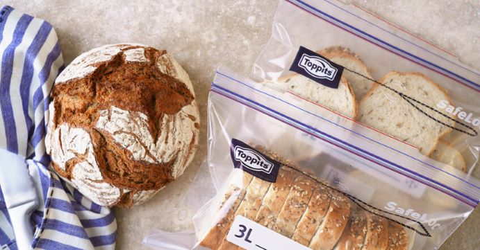
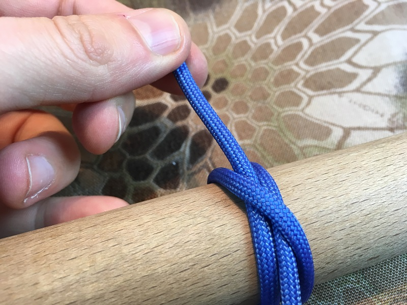
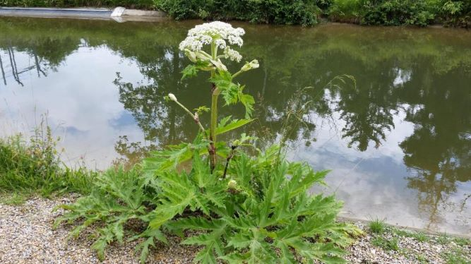
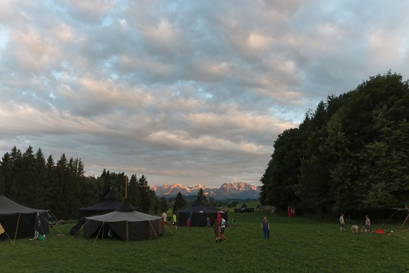
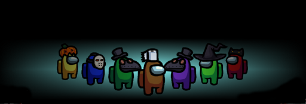

Online Quiz
Willkommen zu unserem Online Quiz
Bitte gib deinen Namen ein:
Ihr Vorname:

Kann man Brot eigentlich einfrieren?
Ja
Nein
Mit was lässt sich ein Lagerfeuer hervorragend bei nassem Wetter anzünden?
Birkenrinde
Tannenzapfen
Lindenspähne
Eichenblüten
Wie viele Kalorien hat ein Döner?
350 kcal
770 kcal
1440 kcal

Wie heißt der abgebildete Knoten?
Achterknoten
Freundschaftsknoten
Abspannknoten
Mastwurf
Palstek
Galgendknoten
Für was verwenden wir bei den Pfadfindern den Palstek?
Jurtendach hochziehen
Jurtendach abspannen
Jurtendach aufwickeln
Stangen verbinden
Um welche Pflanze handelt es sich?
Birke
Buche
Fichte
Ahorn
Eiche
Erle
die Sonne geht im ______ auf. (Himmelsrichtung, nicht Lied)
Wann wurde die alte St. Josefs-Kirche wegen Einsturzgefahr gesperrt? (Mehrfachantworten möglich)
kurz vor Weihnachten
2015
1988
2011
kurz vor dem 50-jährigen Jubiläum
kurz nach der Renovierung
nach dem großen Holzkirchenbrand

Was passiert wenn man diese Pflanze anfasst?
Nix
Verbrennungen 1-2 Grades
pelziges Gefühl im Mund
man bekommt Superkräfte
ein übelriechendes Sekret tritt aus

Welche der folgenden Aussagen ist richtig?
Die Pfadfinder haben den Kompass erfunden
Es gibt die Pfadfinder schon seit 350 Jahren
Die Pfadfinder sind die größte Jugendbewegung der Welt
Richard Baden Powel hat die Pfadfinder gegründet

Bei welchem Spiel läufst du entweder voll lost rum, bist cringe oder sus und machst safe den ein oder anderen randomvote? (awkward, nicht wahr?)
Orientierungshilfe bietet dir Moos denn Moos wächst vor allem an der _____-seite von Bäumen.
Nord
Ost
Süd
West